Rappel — Notions préalables (sec. 3)
• La matière est constituée d'atomes, la plus petite unité d'un élément chimique.
• Les éléments sont classés dans le tableau périodique.
• La matière peut exister sous différents états : solide, liquide, gazeux.
• Un mélange peut être homogène (solution) ou hétérogène.
Atome : la plus petite particule de la matière indivisible par des moyens chimiques ou mécaniques.
Dessine un atome comme tu te le représenterais de la façon la plus scientifique possible. Annote ton dessin si tu peux (charges, parties, etc.).
Garde ce dessin sous la main — on y reviendra avec le modèle simplifié à la fin de la section.
Les premiers modèles atomiques montrent qu'on est passé d'une vision purement philosophique à une approche scientifique basée sur des expériences. Deux philosophes grecs s'opposent sur la nature de la matière.
Selon Démocrite, la matière est constituée de particules indivisibles et infiniment petites qu'il nomme « atomes » (du grec atomos : indivisible). La matière est discontinue : lorsque les atomes s'assemblent, il y a du vide entre eux. Les atomes ont tous la même nature, mais se distinguent par leur forme et leur arrangement, ce qui explique les différences entre les éléments.
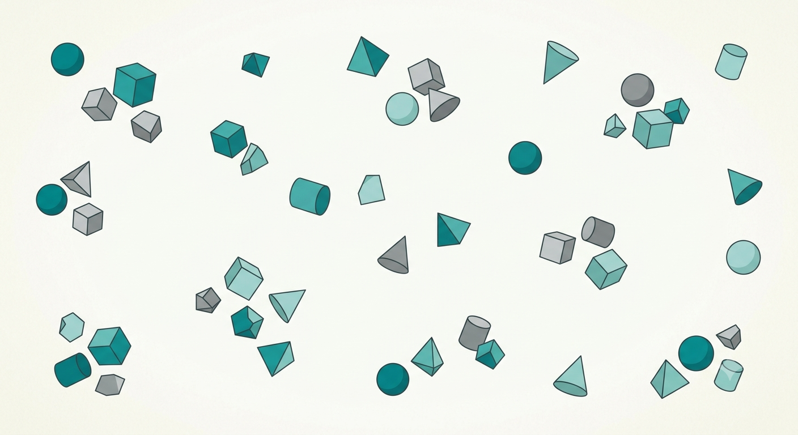
Aristote s'oppose à Démocrite : il rejette les notions d'indivisibilité et de vide dans la matière. Pour lui, la matière est continue, donc divisible à l'infini — on peut toujours couper une substance en morceaux plus petits, sans jamais atteindre une particule ultime.
Bien qu'erronée, la vision d'Aristote a dominé la pensée scientifique pendant plus de 2 000 ans, freinant le développement de la chimie atomique jusqu'au XIXe siècle.
Matière discontinue
Atomes séparés par du vide
Particules indivisibles
Matière continue
Aucun vide possible
Divisible à l'infini
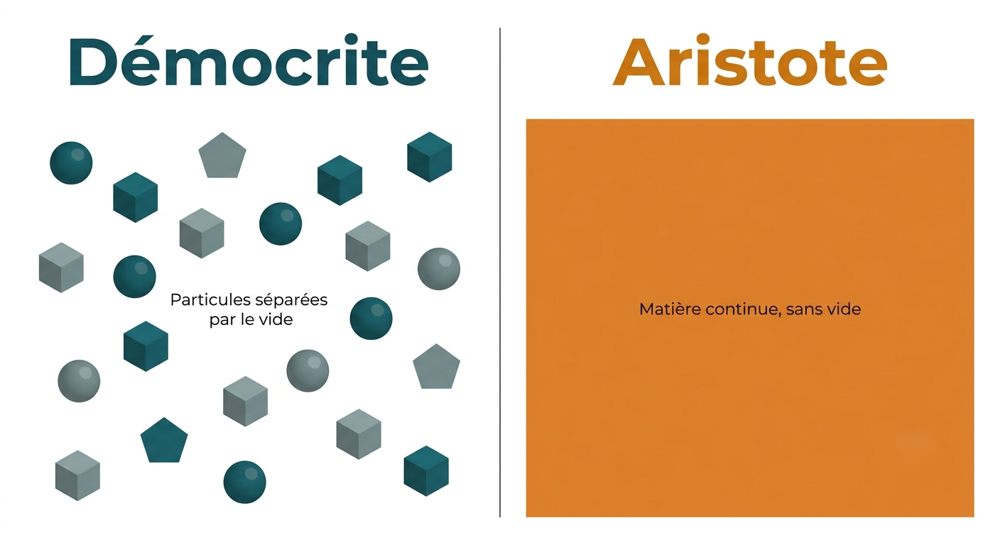
Le modèle de Démocrite existait en même temps que celui d'Aristote. Pourtant, c'est celui d'Aristote — aujourd'hui considéré comme faux — qui a dominé pendant plus de 2000 ans. À ton avis, pourquoi ?
Dalton est le premier à appuyer le concept d'atome sur des données expérimentales et quantitatives, relançant et formalisant l'idée de Démocrite.
- La matière est constituée d'atomes qui sont des sphères pleines (boules de billard), indivisibles et indestructibles.
- Tous les atomes d'un même élément sont identiques, mais diffèrent d'un élément à l'autre par leur masse et leur taille.
- Il est impossible de transformer les atomes d'un élément en ceux d'un autre élément.
- Les atomes de différents éléments peuvent se combiner dans des proportions déterminées pour former de nouveaux composés.
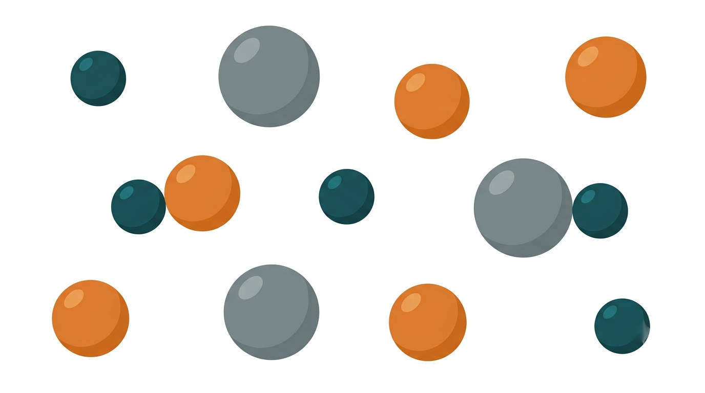
D'après les postulats de Dalton, serait-il possible de transformer un atome de cuivre en atome d'or ? Justifie ta réponse en te basant sur ce que dit Dalton.
Thomson découvre l'électron grâce à l'expérience du tube cathodique : un tube de verre d'où on a retiré presque tout l'air, dans lequel on fait passer un courant électrique entre deux électrodes. Un rayon invisible part de l'électrode négative (la cathode) et fait briller l'écran en face. En plaçant un aimant près du tube, Thomson constate que ce rayon est dévié — preuve qu'il est composé de particules chargées. En mesurant la déviation, il calcule le rapport charge/masse de ces particules et réalise qu'elles sont identiques quel que soit le métal de la cathode : ce sont des constituants universels de la matière. Il les nomme électrons.
- L'atome est une sphère pleine de charge positive.
- Des électrons (charge −), de très faible masse, sont répartis uniformément dans cette sphère.
- La charge positive de la sphère annule la charge négative des électrons.
- L'atome est donc globalement neutre.
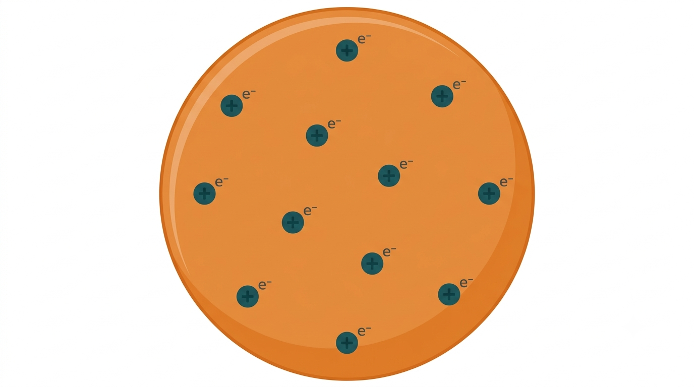
Si l'atome de Thomson contient des électrons chargés négativement, comment celui-ci peut-il être neutre dans l'ensemble ?
En 1896, Becquerel découvre que l'uranium émet spontanément un rayonnement invisible capable de voiler une plaque photographique, même dans le noir — c'est la découverte de la radioactivité. En 1898, Pierre et Marie Curie isolent deux nouveaux éléments encore plus radioactifs (le polonium et le radium) ; Marie Curie nomme le phénomène.
Entre 1899 et 1903, Rutherford étudie ce rayonnement de deux façons : il le fait passer à travers des feuilles de métal de plus en plus épaisses (pour comparer leur pouvoir de pénétration), puis entre les plaques d'un champ électrique (pour observer leur déviation). Il découvre que le rayonnement n'est pas uniforme, mais formé de trois constituants distincts :
| Constituant | Charge | Nature | Pouvoir de pénétration |
|---|---|---|---|
| Rayons alpha (α) | Positive (2+) | Noyau d'hélium (2 protons + 2 neutrons) | Faible — arrêté par une feuille de papier |
| Rayons bêta (β) | Négative (1−) | Électron | Moyen — arrêté par quelques mm d'aluminium |
| Rayons gamma (γ) | Neutre | Onde électromagnétique (comme la lumière, mais plus énergétique) | Élevé — nécessite plusieurs cm de plomb |
C'est la direction de la déviation dans le champ électrique qui révèle le signe de la charge : le rayonnement bêta est fortement attiré vers la plaque positive (il est donc négatif et léger), le rayonnement alpha est faiblement dévié vers la plaque négative (il est donc positif et plus massif), et le rayonnement gamma n'est pas dévié du tout (il est neutre — on découvrira plus tard qu'il s'agit d'une onde, pas d'une particule).
Une simple feuille de papier arrête les rayons alpha, mais il faut plusieurs centimètres de plomb pour arrêter les rayons gamma. Sans regarder la suite de tes notes, qu'est-ce que ça te permet de déduire sur la différence entre ces deux types de rayonnement ?
Expérience : bombardement d'une mince feuille d'or par des particules alpha positives.
3 observations :
- ≈ 0,001 % des particules sont fortement déviées (vers l'arrière).
- ≈ 1 % sont faiblement déviées.
- ≈ 99 % ne sont pas déviées.
3 conclusions :
- L'atome est principalement formé de vide.
- Il existe un noyau : dense (cause les fortes déviations), très petit (0,001 % touchent le noyau), et positif (les déviations faibles sont dues à la répulsion avec les particules alpha positives).
- Les électrons négatifs, en nombre égal aux protons, circulent autour du noyau dans un espace ≈ 100 000 fois plus grand que le noyau. Ils ont tous le même niveau d'énergie (dans ce modèle).
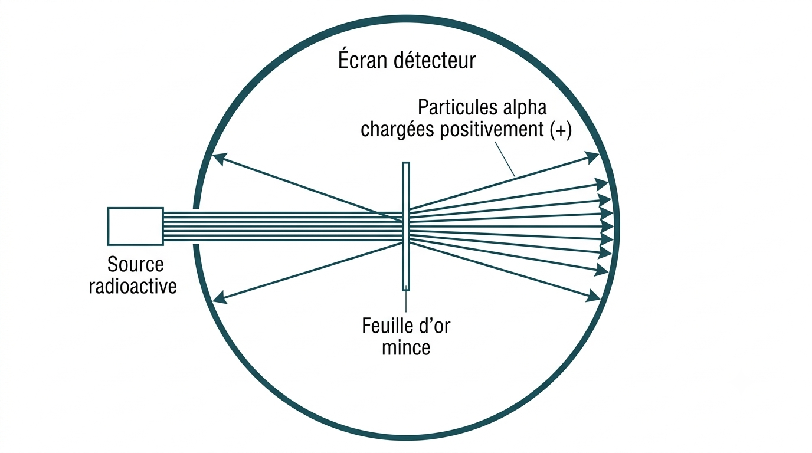
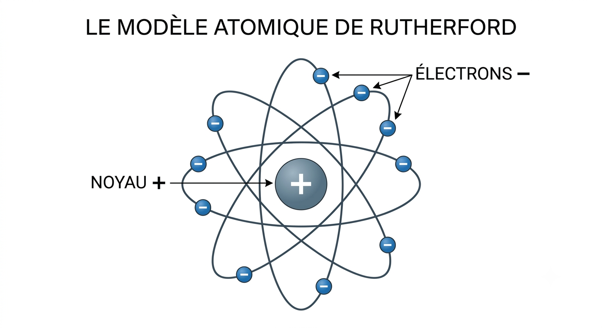
Avant l'expérience de Rutherford, on pensait que l'atome ressemblait au modèle de Thomson (une sphère pleine). Pourquoi le fait que presque toutes les particules alpha aient traversé la feuille d'or sans déviation a-t-il autant surpris les scientifiques de l'époque ?
Bohr améliore Rutherford car ce dernier n'expliquait pas les spectres d'émission ni pourquoi les électrons ne s'écrasaient pas sur le noyau.
- Les électrons circulent sur des orbites précises appelées couches électroniques, chacune correspondant à un niveau d'énergie constant.
- Sur sa couche, l'électron conserve son énergie et ne s'écrase pas sur le noyau. Plus il a d'énergie, plus son orbite est éloignée.
- Un électron peut absorber de l'énergie (chaleur, lumière, électricité) pour passer à une orbite supérieure (état excité), puis revenir à son orbite initiale (état fondamental) en libérant la même quantité d'énergie sous forme de lumière ou de chaleur.
- Il y a un nombre maximal d'électrons par couche.
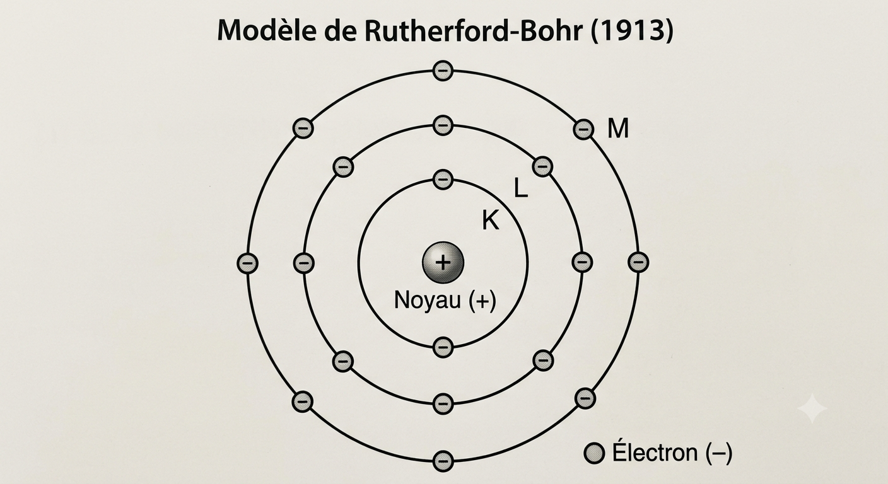
Selon toi, comment la lumière d'une lampe est-elle produite ?
Le modèle de 1911 établissait que le noyau est dense et positif, sans dire de quoi il est fait. En 1919, Rutherford bombarde du gaz azote avec des particules alpha et observe l'éjection de particules — identiques, peu importe l'élément bombardé, à des noyaux d'hydrogène. Il en déduit que ce noyau d'hydrogène est un constituant fondamental commun à tous les noyaux, qu'il nomme proton l'année suivante (du grec protos, « premier »).
C'est la première réaction nucléaire provoquée artificiellement par un humain (parfois appelée à tort « le premier atome divisé » — il s'agit plutôt d'une transmutation : un élément se change en un autre).
Le neutron est une particule du noyau (nucléon) sans charge électrique, de masse ≈ 1 u (légèrement plus lourd que le proton). Découvert en bombardant du béryllium par des particules alpha :
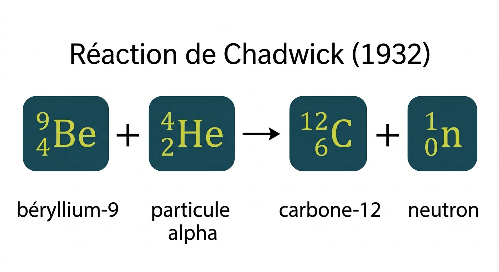
Les neutrons augmentent la force nucléaire forte (attraction) entre les particules du noyau, ce qui permet de vaincre la répulsion électrique entre les protons et empêche le noyau d'éclater.
Le proton a été identifié en 1919, mais il a fallu attendre 1932 pour découvrir le neutron. Indice : repense à la méthode utilisée pour étudier les rayons α/β/γ (déviation dans un champ électrique). Pourquoi penses-tu que le neutron a été plus difficile à détecter ?
Le modèle atomique simplifié est le modèle de Rutherford-Bohr auquel on ajoute le proton (Rutherford) et le neutron (Chadwick) dans le noyau. C'est ce modèle complet — noyau (protons + neutrons) entouré d'électrons sur des couches — qu'on utilise tout au long du programme de secondaire 4.
ℹ️ Les masses en u (unité de masse atomique) sont présentées ici à titre indicatif. La définition de l'unité u, son origine et son utilisation dans les calculs sont expliquées en détail dans la section 1.2 — La masse atomique relative →
Chaque couche a un nombre maximal d'électrons :
Le numéro de couche correspond exactement au numéro de la période dans le tableau périodique. Un atome de la période 3 possède 3 couches électroniques, un atome de la période 2 en possède 2, etc.
De plus, comme tout atome est électriquement neutre, le nombre d'électrons est toujours égal au nombre de protons (= numéro atomique Z). Ces électrons se répartissent sur les couches en les remplissant de l'intérieur vers l'extérieur.
→ Ce lien entre couches et périodes est approfondi dans la section 1.3 — Le tableau périodique →
Exemple — le chlore (Cl) :
- Z = 17 → 17 protons → 17 électrons à répartir
- Période 3 → 3 couches électroniques
- Famille VIIA (halogènes) → 7 électrons de valence sur la dernière couche
- Répartition : couche 1 → 2 e⁻ | couche 2 → 8 e⁻ | couche 3 → 7 e⁻ → 2 — 8 — 7
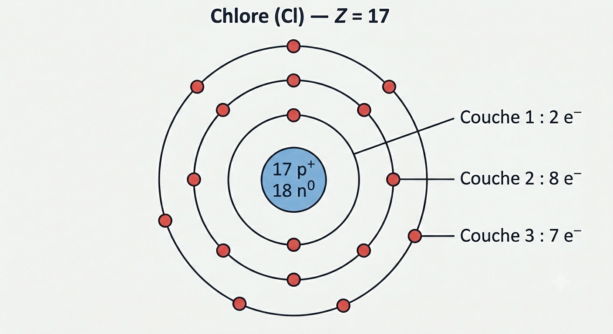
On distingue deux façons de représenter la structure d'un atome :
- Configuration électronique : on représente les couches et le nombre d'électrons par couche. Le noyau est une sphère simple, sans détail.
- Configuration atomique (simplifiée) : même représentation, mais le noyau indique en plus le nombre de protons (p⁺) et de neutrons (n⁰).
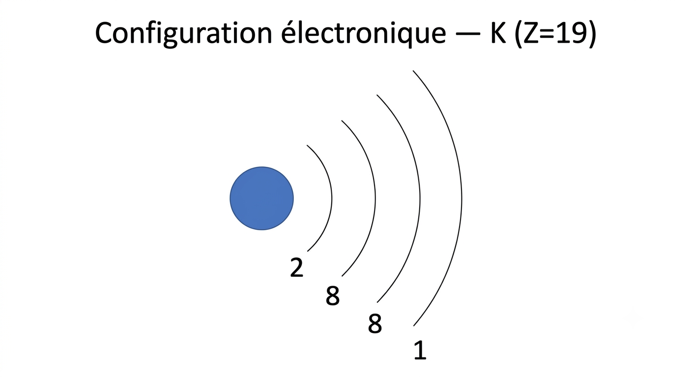
Le noyau n'est pas détaillé. On indique seulement le nombre d'électrons par couche : 2 — 8 — 8 — 1.
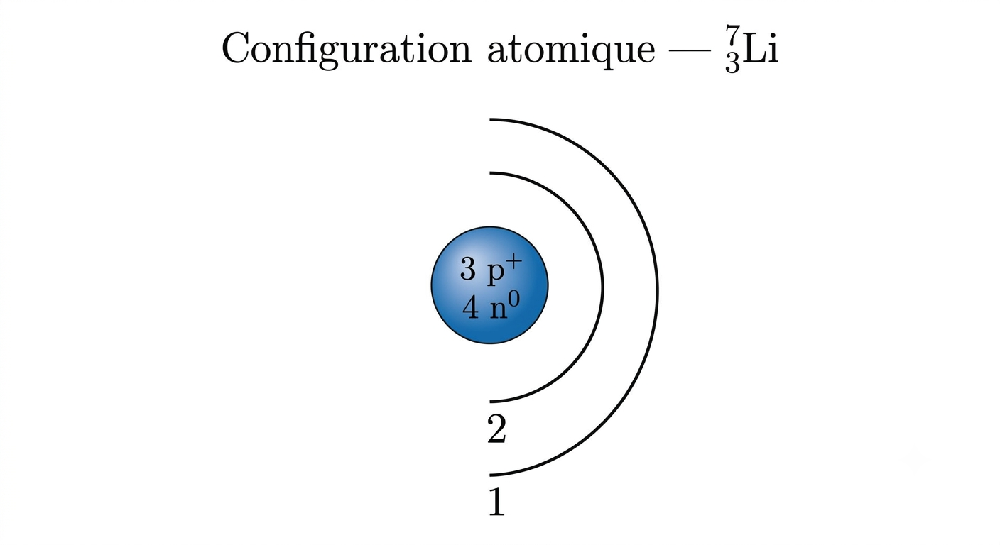
Le noyau précise 3 p⁺ et 4 n⁰. Les couches indiquent la répartition des électrons : 2 — 1.
Question 1. Un atome se trouve dans la 2e période du tableau périodique. Combien de couches électroniques possède-t-il ?
Question 2. Un atome a 15 protons et se trouve dans la 3e période. Combien d'électrons de valence possède-t-il ?
On remplit de l'intérieur : couche 1 → 2 e⁻ | couche 2 → 8 e⁻ | il reste 15 − 2 − 8 = 5 e⁻ sur la couche 3.
Les électrons de valence = électrons sur la dernière couche = 5 électrons de valence.
(Il s'agit du phosphore, P — famille VA, ce qui confirme 5 électrons de valence.)
En tout temps, la dernière couche (couche de valence) ne peut contenir plus de 8 électrons, même si la couche peut théoriquement en accueillir davantage. Cette règle s'applique à tous les éléments qui ont plus d'une couche.
Les couches pouvant accueillir plus de 8 électrons (couches 3, 4, 5…) se remplissent au-delà de 8 seulement après que les couches suivantes ont commencé à se remplir.
La règle de l'octet est une tendance chimique, pas une loi de la nature. Elle traduit le fait que les atomes cherchent à imiter la configuration stable des gaz nobles (Ne, Ar…) qui ont 8 électrons sur leur couche externe.
Elle fonctionne très bien pour les éléments de la 2e période : C, N, O, F. Mais elle ne s'applique pas toujours :
- H et He → règle du duet (couche K pleine = 2 électrons)
- B → souvent stable avec seulement 6 électrons
- Be → souvent stable avec 4 électrons
- P, S, Cl → peuvent dépasser 8 électrons dans certains composés
En secondaire 4, on applique la règle de l'octet pour les molécules simples — elle marche très bien dans ce contexte. Mais il faut la voir comme un modèle pratique, pas comme une limite physique absolue.
Pour identifier un atome précisément, on utilise la notation nucléaire. Elle indique deux informations essentielles : le nombre total de nucléons (protons + neutrons) en haut, et le nombre de protons en bas — ce qui suffit à identifier l'élément de façon unique.
C'est le nombre de protons (Z) — et lui seul — qui détermine de quel élément il s'agit. Deux atomes avec le même Z sont toujours le même élément, peu importe leur nombre de neutrons.
En revanche, le nombre de neutrons peut varier d'un atome à l'autre pour un même élément : ce sont les isotopes. Pour un même Z, on peut donc avoir différentes valeurs de A. (Voir section 1.2 → pour les isotopes en détail.)
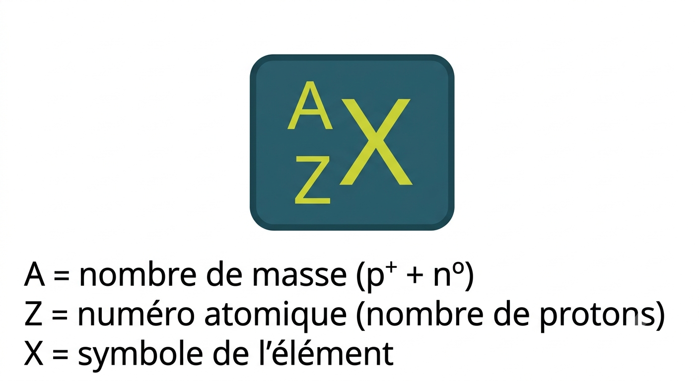
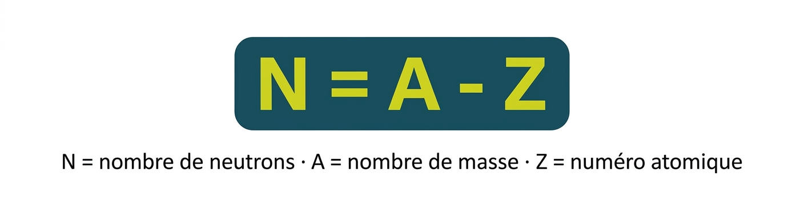
- A (en haut) = nombre de masse = nombre total de nucléons (p⁺ + n⁰)
- Z (en bas) = numéro atomique = nombre de protons = identité de l'élément
- N = nombre de neutrons = A − Z
- X = symbole de l'élément
Exemple : ¹²₆C → A=12, Z=6 → 6 protons, 6 neutrons (12−6), 6 électrons (atome neutre).
Autre exemple : ¹⁴₆C (carbone-14) → même Z=6 (toujours du carbone), mais A=14 → 8 neutrons. C'est un isotope du carbone-12.
En ST (secondaire 4), on représente l'atome par sa configuration électronique en plaçant les électrons sur les couches autour d'un noyau indiquant p⁺ et n⁰.
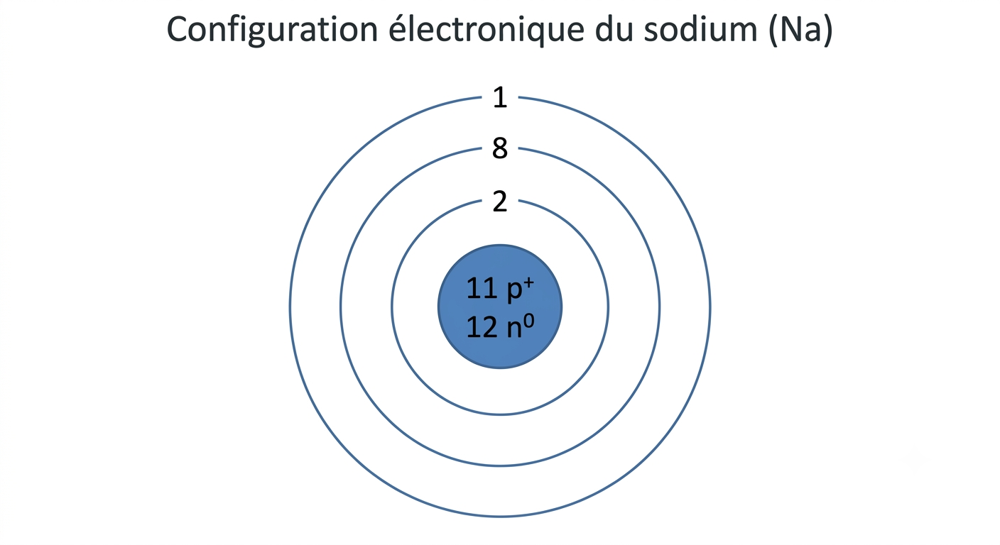
Clique sur une réponse pour la valider. La bonne réponse s'affiche immédiatement.
Selon toi, combien d'atomes contient un seul grain de sable ? Donne ton estimation dans le chat — pas de mauvaise réponse !
Un proton pèse environ 1,67 × 10⁻²⁷ kg — un nombre si petit qu'il est pratiquement inutilisable dans les calculs courants. Plutôt que de travailler avec des puissances de 10 négatives, les scientifiques ont créé une unité relative : l'unité de masse atomique (u), définie par rapport à un étalon de référence.
Le choix de l'étalon a évolué avec le temps. Depuis 1961, c'est le carbone-12 qui sert de référence, car il est stable, abondant dans la nature et facile à mesurer avec précision en spectrométrie de masse. On lui attribue arbitrairement la masse de 12 u exactement, et toutes les autres masses atomiques sont mesurées par rapport à lui.
Par convention, l'atome de carbone-12 (6p, 6n, 6e) pèse exactement 12 u. Toutes les masses atomiques sont mesurées par rapport à lui.
1 u = 1/12 de la masse du carbone-12 ≈ 1,6605 × 10⁻²⁷ kg
| Particule | Masse (kg) | Masse (u) |
|---|---|---|
| Proton | 1,672 × 10⁻²⁷ kg | 1,0073 u |
| Neutron | 1,674 × 10⁻²⁷ kg | 1,0087 u |
| Électron | 9,109 × 10⁻³¹ kg | 5,486 × 10⁻⁴ u (négligeable) |
Si on additionne les masses de 6 protons et 6 neutrons libres :
- 6 protons → 6 × 1,0073 = 6,0438 u
- 6 neutrons → 6 × 1,0087 = 6,0522 u
- Total : 12,096 u — mais le carbone-12 pèse exactement 12,000 u
Il manque 0,096 u. Cette masse n'a pas disparu : elle a été convertie en énergie lors de la formation du noyau. C'est ce qu'on appelle le défaut de masse.
Selon la formule d'Einstein E = mc², lier des nucléons ensemble libère de l'énergie — et cette énergie libérée correspond à une perte de masse. Un noyau est un système plus stable que ses constituants séparés, et cette stabilité a un coût en masse. C'est exactement ce phénomène, l'énergie de liaison nucléaire, qui rend les noyaux atomiques stables.
Thomson, Rutherford et Chadwick ont tous trois travaillé au Laboratoire Cavendish de l'Université de Cambridge, en Angleterre — et tous trois ont reçu le prix Nobel de physique (1906, 1908 et 1935 respectivement). C'est l'un des laboratoires les plus productifs de l'histoire de la physique : en moins de 40 ans, trois chercheurs du même endroit ont découvert l'électron, le noyau atomique et le neutron, réécrivant entièrement notre compréhension de la matière.
Prenons deux atomes du même élément chimique. Comment est-ce possible que les deux aient un poids légèrement différent ?
Isotopes : variétés du même atome (même Z, même nombre de protons) qui diffèrent uniquement par leur nombre de neutrons, et donc par leur nombre de masse A.
Les isotopes d'un même élément ont les mêmes propriétés chimiques (même nombre d'électrons de valence), mais pas la même masse.
Exemple — Lithium : ⁶₃Li (3p, 3n) et ⁷₃Li (3p, 4n). Les deux ont 3 électrons.
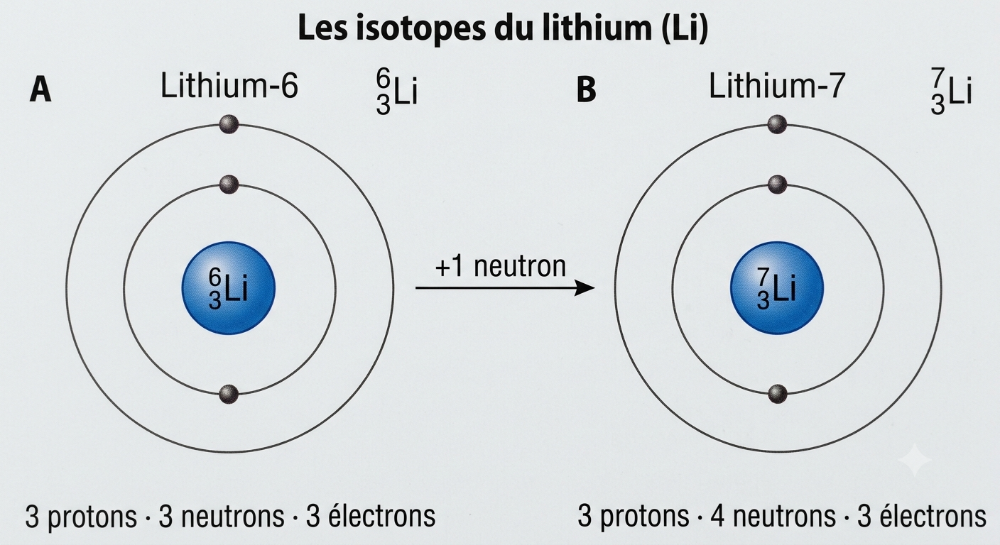
Chaque isotope a une abondance relative (%) différente dans la nature. Les isotopes les plus stables sont généralement les plus abondants.
Le carbone-14 (⁶₁₄C) contient 6 protons et 8 neutrons. Il est produit naturellement dans la haute atmosphère par les rayons cosmiques, et les organismes vivants l'incorporent en permanence — dans la même proportion que dans l'air — tant qu'ils respirent ou se nourrissent.
À la mort d'un organisme, l'apport en C-14 s'arrête. Le C-14 étant radioactif, il se désintègre à un rythme connu et constant (sa demi-vie est de 5 730 ans). En mesurant la proportion de C-14 restante dans un échantillon organique (os, bois, charbon…) et en comparant avec la proportion actuelle dans l'atmosphère, on peut calculer depuis combien de temps l'organisme est mort. C'est le principe de la datation au carbone-14.
La masse inscrite dans le tableau périodique est la moyenne pondérée des masses de tous les isotopes naturels, tenant compte de l'abondance relative de chacun.
Cette masse n'est jamais un nombre entier car :
- Une moyenne pondérée donne rarement un entier.
- Les masses des isotopes ne sont pas exactement des entiers.
- Les pourcentages d'abondance ne sont pas des entiers.
- Ce ne sont pas des approximations — ce sont des valeurs précises.
Exemple — Néon :
| Isotope | Abondance naturelle | Masse atomique | Contribution |
|---|---|---|---|
| Néon-20 | 90,48 % | 20 u | 18,10 u |
| Néon-21 | 0,27 % | 21 u | 0,057 u |
| Néon-22 | 9,25 % | 22 u | 2,035 u |
| Masse atomique moyenne | 20,19 u | ||
Clique sur une réponse pour la valider. La bonne réponse s'affiche immédiatement.
C'est le savant russe Dimitri Mendeleïev (1834-1907) qui a conçu le premier tableau périodique, en classant les éléments par ordre croissant de masse atomique. Il a remarqué que les propriétés des éléments se répétaient de façon périodique à intervalles fixes — d'où le nom du tableau. Le tableau moderne reprend cette idée, mais classe plutôt les éléments par ordre croissant de numéro atomique (Z).
Les éléments sont disposés selon plusieurs règles :
- Ordre numérique croissant (Z) de gauche à droite.
- Quand une couche est remplie au maximum, une nouvelle couche débute → nouvelle ligne.
- La dernière couche ne peut jamais dépasser 8 électrons (règle de l'octet).
- Les couches pouvant contenir plus de 8 électrons se remplissent après que les couches suivantes ont commencé.
En chimie, on classe les éléments du tableau périodique en grandes catégories. Parmi les choix suivants, lequel représente le bon découpage ?
Pourquoi pas B ? Gaz / liquide / solide sont des états physiques, pas des catégories chimiques. Le mercure est un métal ET un liquide — ce sont deux systèmes de classification différents. Un même élément peut être métal et gaz à haute température.
Pourquoi pas C ? Elle mélange les catégories chimiques (métal, non-métal) avec les états physiques (gaz, liquide) — deux systèmes incompatibles.
Pourquoi pas D ? Alcalin, halogène et gaz noble sont des familles du tableau périodique — une subdivision à l'intérieur des catégories, pas les catégories elles-mêmes.
Retenir : les 3 catégories classent les éléments selon leurs propriétés chimiques et leur position dans le tableau — pas selon leur état physique.
| Catégorie | Position | Propriétés physiques | Propriétés chimiques |
|---|---|---|---|
| Métaux | Côté gauche (à gauche de l'escalier) | Brillants, conducteurs de chaleur et d'électricité, malléables (en feuille), ductiles (en fil). Solides sauf le mercure (liquide à TPN). | Réagissent avec les acides. |
| Non-métaux | Extrême droite (sauf H) | Aspect terne, cassants, non malléables, non ductiles. | Bons isolants électriques et thermiques. |
| Métalloïdes | Forment l'escalier lui-même (B, Si, Ge, As, Sb, Te, At) | Généralement cassants et non ductiles, mauvais conducteurs. | Propriétés intermédiaires entre métaux et non-métaux. Ceux à gauche ressemblent aux métaux ; à droite, aux non-métaux. |
Il y en a 7. Tous les éléments d'une même période ont le même nombre de couches électroniques. Le numéro de la période = nombre de couches.
→ Ce principe est illustré avec l'exemple du chlore (2—8—7) dans la section 1.1 — Les modèles atomiques →
Les éléments d'une même famille ont le même nombre d'électrons de valence (sauf l'hélium), ce qui leur confère des comportements chimiques similaires. Ce sont les électrons de valence qui font les réactions chimiques.
L'hélium est dans la famille VIII A car sa dernière couche est pleine (2/2), comme tous les autres gaz nobles.
Trouve un produit ou un objet chez toi qui contient un élément de chacune des familles suivantes : alcalins, alcalino-terreux, halogènes, gaz nobles. Réponds dans le chat !
Alcalino-terreux : regarde le lait (calcium, Ca), un antiacide comme le Tums (carbonate de calcium), ou de la crème solaire (oxyde de zinc, mais aussi souvent du Mg).
Halogènes : eau de Javel ou piscine (chlore, Cl), dentifrice (fluor, F), sel iodé (iode, I).
Gaz nobles : ampoules fluorescentes (argon, Ar), enseignes lumineuses « néon » (néon, Ne), ballons d'hélium (He).
Si tu ne trouves pas pour une famille, c'est normal — les gaz nobles sont rarement dans un produit, mais dans un objet (ampoule, ballon).
| Famille | Groupe | Éléments | Propriétés clés | Utilisations |
|---|---|---|---|---|
| Hydrogène | IA (1 é de valence) | H | Gaz incolore, très léger, très inflammable. Combustion → eau. | Carburant (fusées, moteurs H) |
| Alcalins | IA (1 é de valence) | Li, Na, K, Rb, Cs, Fr | Métaux mous, réagissent fortement avec l'eau et les non-métaux. Deviennent alcalins (basiques) dans l'eau. | — |
| Alcalino-terreux | IIA (2 é de valence) | Be, Mg, Ca, Sr, Ba, Ra | Métaux mous, réagissent avec l'eau mais moins violemment que les alcalins. | Mg : feux d'artifice |
| Halogènes | VIIA (7 é de valence) | F, Cl, Br, I, At | Très réactifs. Forment des sels avec les alcalins. Corrosifs (toxiques) et bactéricides. Forment des acides forts avec H. | F : anticaries ; F/Cl/I : désinfectants ; I/Br : lampes halogènes |
| Gaz nobles | VIIIA (8 é, sauf He : 2) | He, Ne, Ar, Kr, Xe, Rn | Grande stabilité chimique (couche de valence pleine). Gaz incolores, produisent une couleur typique dans un tube cathodique. | He : ballons ; He/Ne/Ar… : enseignes lumineuses (néons) |
La réponse tient en une phrase : les alcalins ont 1 électron de trop, et les halogènes en manquent exactement 1 pour compléter leur couche.
Les alcalins (1 électron de valence) cherchent à perdre cet électron pour ressembler au gaz noble précédent. Les halogènes (7 électrons de valence) cherchent à en gagner 1 pour ressembler au gaz noble suivant. Les deux groupes se « trouvent » donc parfaitement : l'alcalin cède son électron à l'halogène → les deux atteignent la stabilité d'un gaz noble → ils forment un sel ionique.
Exemple : Na (1 é de valence) + Cl (7 é de valence) → Na⁺ + Cl⁻ → NaCl (sel de table). Ce n'est pas un hasard — c'est exactement la logique de l'octet à l'œuvre.
Les métaux alcalins (Li, Na, K…) réagissent fortement avec l'eau pour deux raisons qui se combinent :
1. Leur électron de valence est très facile à perdre. Avec un seul électron sur leur couche externe, très peu retenu par le noyau (faible énergie d'ionisation), les alcalins cherchent à s'en débarrasser. L'eau est parfaite pour accepter cet électron.
2. La réaction libère du gaz H₂ et beaucoup de chaleur. La réaction générale est :
Le métal devient ion positif (M⁺), l'eau se transforme en hydroxyde (OH⁻ — une base forte), et du gaz hydrogène est libéré. La chaleur dégagée peut enflammer ce H₂ → flamme ou explosion.
3. La réactivité augmente en descendant la colonne, car l'électron externe est de plus en plus loin du noyau et de plus en plus facile à arracher :
C'est pourquoi le lithium réagit calmement, le sodium fond et crache des étincelles, et le potassium s'enflamme avec une flamme violette.
Trois questions à réfléchir avant de continuer :
1. Pourquoi est-ce que les atomes cherchent à créer des liens entre eux ?
2. Dans la nature, on retrouve de l'oxygène sous forme de O₂ (deux atomes liés), jamais simplement O seul. Pourquoi ?
3. Le sel de table est du NaCl — du sodium et du chlore liés ensemble. Pourquoi ne retrouve-t-on pas simplement du « Na » seul dans la nature ?
O₂ : l'oxygène a 6 électrons de valence — il lui en manque 2. En se liant à un autre atome d'oxygène, les deux partagent 2 paires d'électrons → chacun « compte » 8 électrons de valence → stabilité. Un atome O seul serait trop réactif pour exister librement.
NaCl : le sodium a 1 électron de valence à « se débarrasser » ; le chlore en manque 1. Le sodium le cède au chlore → Na⁺ et Cl⁻ → les deux ont une couche pleine → ils s'attirent et forment un cristal stable.
C'est exactement ce que la notation de Lewis permet de visualiser : combien d'électrons un atome cherche à partager ou à céder.
Les électrons de valence (dernière couche) sont responsables des liaisons chimiques. On les représente avec des points autour du symbole de l'élément.
Pourquoi seulement les électrons de valence, et pas tous les électrons ? Parce que les électrons des couches internes sont fortement retenus par le noyau et ne participent pas aux réactions chimiques — ils ne sont pas disponibles pour former des liaisons. Seuls les électrons de la couche externe, plus éloignés du noyau et moins retenus, peuvent être partagés ou transférés lors d'une réaction. C'est donc la seule couche qui compte pour prédire le comportement chimique d'un atome.
- On ne représente que les électrons de valence.
- Le nombre d'électrons de valence = chiffre romain en haut de la colonne (série A uniquement).
- Pour les métaux de transition (série B) : 2 électrons de valence par défaut (nombreuses exceptions).
- On s'imagine 4 côtés autour de l'atome (haut, bas, gauche, droite). On ne met jamais 2 points du même côté avant d'en avoir placé 1 dans chacun des 4 côtés.
- Quand il y a 2 électrons du même côté, on peut remplacer les 2 points par un trait (optionnel).
- Exception : l'hélium n'a que 2 électrons de valence (1 seule couche à remplir).
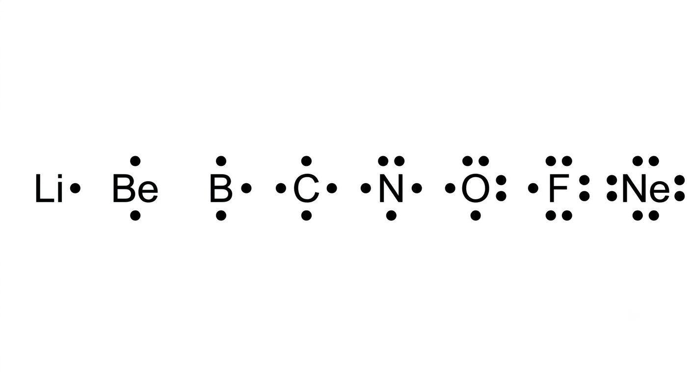
Le béryllium (Be) a 2 électrons de valence répartis sur 2 côtés différents (haut et bas), car sa couche de valence (n = 2) contient plusieurs orbitales disponibles. Les élèves généralisent souvent ce modèle à l'hélium — c'est une erreur : l'hélium n'a qu'une seule couche (K), qui ne contient qu'une seule orbitale (1s). Ses 2 électrons sont donc forcément déjà appariés et doivent être dessinés comme un seul doublet collé au symbole, jamais comme 2 points séparés.
Selon toi, quel atome a le plus grand rayon atomique : le sodium (Na, période 3, groupe IA) ou le xénon (Xe, période 5, groupe VIIIA) ? Réponds dans le chat avant de lire la suite.
Na ≈ 186 pm vs Xe ≈ 108 pm
Pourtant le xénon est en période 5 — il a 5 couches, contre 3 pour le sodium. Alors pourquoi est-il plus petit ?
Parce que le xénon est en groupe VIIIA : il a 54 protons dans son noyau qui attirent ses électrons très fortement, comprimant l'atome. Le sodium, lui, n'a que 11 protons — bien moins de force pour retenir ses électrons de valence → rayon beaucoup plus grand malgré moins de couches.
Conclusion : le nombre de couches n'est qu'un des deux facteurs. La charge du noyau (Z) compte tout autant — et parfois davantage.
Le rayon atomique est la distance entre le noyau et l'électron le plus éloigné.
Plus de couches électroniques → rayon plus grand.
Plus de protons dans le noyau → attraction plus forte sur les électrons → rayon plus petit.
L'électronégativité est la capacité d'un atome à attirer les électrons des autres atomes lors de la formation d'un composé. C'est une propriété relative : tous les éléments (sauf les gaz nobles) ont une valeur d'électronégativité, même les métaux alcalins — mais leur valeur est très faible, ce qui signifie qu'ils préfèrent céder leurs électrons plutôt qu'en attirer.
Un exemple pour illustrer : le lithium (Li) et le césium (Cs) sont tous deux des alcalins — des métaux qui cèdent facilement leurs électrons. Pourtant, le lithium est plus électronégatif que le césium (1,0 vs 0,7 sur l'échelle de Pauling), car son noyau est plus proche de ses électrons de valence. Au sein d'une famille, la tendance s'applique toujours — même quand toute la famille reste dans les valeurs basses.
Les atomes plus petits (en haut) ont leur noyau plus proche des électrons de valence → attraction plus forte sur les électrons voisins.
Plus de protons → rayon plus petit → les non-métaux (droite) cherchent à compléter leur couche et attirent fortement les électrons voisins. Les métaux (gauche) les cèdent facilement.
Les gaz nobles n'ont pas d'électronégativité — leur couche de valence est pleine, ils n'ont aucune raison d'attirer des électrons supplémentaires. L'élément le plus électronégatif est le fluor (F, 4,0) ; le moins électronégatif est le francium (Fr, 0,7).
L'échelle de Pauling va de 0 à 4. Une différence d'électronégativité entre deux atomes permet de prédire le type de liaison chimique qui se formera entre eux — notion abordée en section 1.4.
| Famille | Élément | Électronégativité | Interprétation |
|---|---|---|---|
| Gaz nobles | Ne, Ar, Kr… | — | Aucune (couche pleine) |
| Alcalins | Li → Cs | 1,0 → 0,7 | Très faible — cèdent leurs électrons |
| Alcalino-terreux | Be → Ba | 1,5 → 0,9 | Faible — tendent aussi à céder |
| Halogènes | F → I | 4,0 → 2,5 | Très élevée — attirent fortement les électrons |
| — | Hydrogène (H) | 2,2 | Intermédiaire — cas particulier |
L'énergie d'ionisation est l'énergie nécessaire pour arracher un électron à un atome neutre (et ainsi former un cation). Plus un électron est retenu fortement par le noyau, plus cette énergie est élevée.
Les électrons de valence des atomes plus petits (en haut) sont plus proches du noyau, donc plus difficiles à arracher.
Plus de protons → attraction plus forte sur les électrons de valence → plus difficile de les arracher.
Clique sur une réponse pour la valider. La bonne réponse s'affiche immédiatement.
🔵 Xénon (Xe) — gaz rare, incolore
🔴 Mercure (Hg) — seul métal liquide à température ambiante
🟡 Or (Au) — métal dense et malléable
🟢 Fer (Fe) — métal rigide, très courant
⚪ Hydrogène (H) — gaz, le plus léger connu
🟣 Lithium (Li) — métal si léger qu'il flotte sur l'eau
Dans la nature, très peu d'éléments existent à l'état d'atomes isolés. La plupart se lient chimiquement à d'autres atomes pour atteindre une configuration plus stable — un comportement qu'on a déjà vu à l'œuvre avec la règle de l'octet (sections 1.2 et 1.3). Cette section explore les deux grandes façons dont les atomes se lient : par partage d'électrons (donnant des molécules covalentes) ou par transfert d'électrons (donnant des ions et des composés ioniques) — ainsi que les règles qui permettent de nommer et d'écrire correctement ces composés.
Molécule : ensemble d'atomes liés par des liaisons chimiques, formant la plus petite unité d'une substance capable d'exister de façon indépendante en conservant ses propriétés.
Une molécule diatomique contient 2 atomes (H₂, O₂, N₂, Cl₂…). Une molécule polyatomique en contient plus (H₂O, CO₂, NH₃…).
Un ion est un atome (ou un groupe d'atomes) qui a perdu ou gagné un ou plusieurs électrons, ce qui le rend électriquement chargé. On distingue deux types d'ions :
| Type d'ion | Formation | Charge | Exemple |
|---|---|---|---|
| Cation | Un atome perd un ou plusieurs électrons (typique des métaux) | Positive (+) | Na → Na⁺ + e⁻ |
| Anion | Un atome gagne un ou plusieurs électrons (typique des non-métaux) | Négative (−) | Cl + e⁻ → Cl⁻ |
La liaison ionique (vue dans la sous-section suivante) résulte justement de ce transfert d'électrons : un métal cède un ou plusieurs électrons de valence à un non-métal, ce qui forme un cation et un anion qui s'attirent par leur charge opposée.
Les atomes dont la dernière couche n'est pas pleine cherchent à la remplir (les non-métaux) ou à se débarrasser de leurs électrons de valence (les métaux), car ils deviennent ainsi stables comme un gaz inerte.
| Type d'élément | Comportement | Charge obtenue |
|---|---|---|
| Non-métaux (très électronégatifs, sauf gaz inertes) | Gagnent des électrons pour compléter leur couche de valence | Négative = numéro de famille − 8 |
| Métaux, série A (peu électronégatifs) | Perdent facilement leurs électrons de valence, retenus faiblement | Positive = numéro de famille |
| Métaux de transition, série B | Perdent généralement 2 électrons | Généralement 2+ (plusieurs exceptions) |
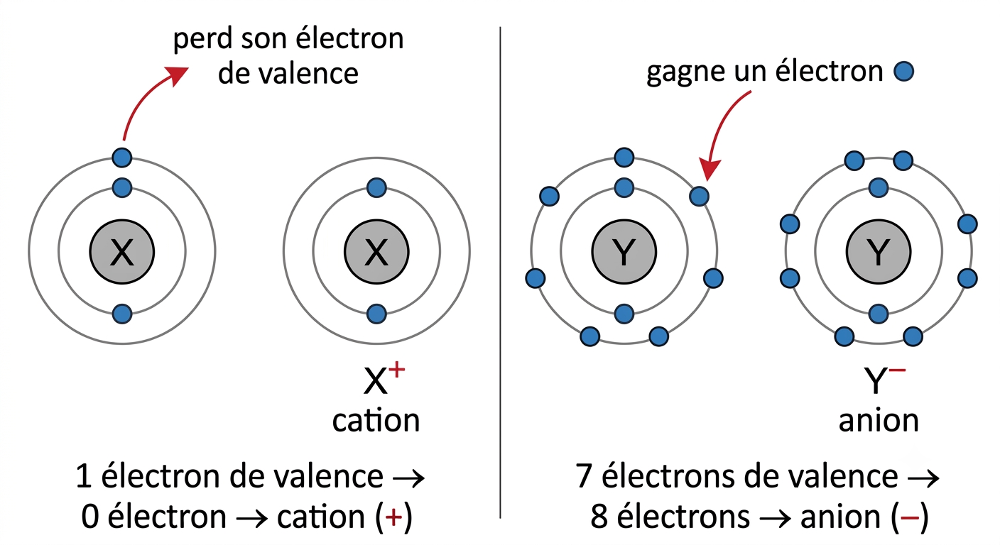
- Lié à un non-métal → l'hydrogène est positif (H⁺). Exemple : HCl → H⁺ + Cl⁻
- Lié à un métal → l'hydrogène est négatif (H⁻). Exemple : LiH → Li⁺ + H⁻
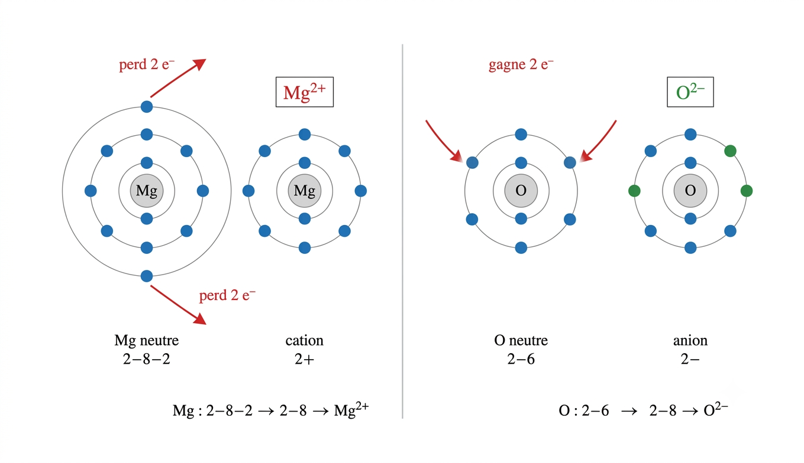

Avant la liaison : le sodium (Na) possède 1 électron de valence ; le chlore (Cl) en possède 7.
Pendant la liaison : le sodium cède son électron de valence au chlore, qui complète ainsi sa couche périphérique (règle de l'octet) — la couche qui était l'avant-dernière chez le sodium devient sa nouvelle couche périphérique.
Après la liaison : en perdant un électron, le sodium n'est plus électriquement neutre — il devient l'ion sodium Na⁺ (cation). En gagnant cet électron, le chlore devient l'ion chlorure Cl⁻ (anion). Les deux ions, de charges opposées, s'attirent : c'est la liaison ionique.

Certains manuels parlent de « la molécule de NaCl », mais ce terme devrait être réservé aux composés à liaison covalente (comme H₂O ou CO₂), où un nombre fixe d'atomes forme une unité discrète et isolable. Le NaCl, lui, est un composé ionique : à l'état solide, il forme un réseau cristallin où chaque Na⁺ est entouré de plusieurs Cl⁻ (et vice-versa) dans toutes les directions — il n'existe pas de « paire » NaCl isolée comme il existe une molécule H₂O isolée. La formule NaCl représente donc une unité formulaire (le plus petit ratio d'ions), pas une molécule au sens strict.
Il existe aussi des groupes d'atomes chimiquement liés qui portent une charge électrique globale, causée par un surplus ou un déficit d'électrons. Un tel groupe forme un tout indissociable, appelé ion polyatomique (« poly » = plusieurs ; « polyatomique » = constitué de plusieurs atomes).
Un ion polyatomique est un groupe de deux ou de plusieurs atomes chimiquement liés, qui porte une charge électrique causée par un surplus ou un déficit d'électrons.
D'une manière générale, il existe plus d'anions polyatomiques que de cations polyatomiques. Les cations polyatomiques, comme l'ammonium (NH₄⁺), sont habituellement unis à un ion non métallique (ex. NH₄Cl). Les anions polyatomiques, comme les sulfates (SO₄²⁻), sont unis soit à un ion métallique (ex. MgSO₄), soit à un ion hydrogène (ex. HNO₃).
| Charge | Formule chimique | Nom de l'ion |
|---|---|---|
| +1 (cation) | H₃O⁺ | Hydronium |
| NH₄⁺ | Ammonium | |
| −1 | OH⁻ | Hydroxyde |
| NO₃⁻ | Nitrate | |
| NO₂⁻ | Nitrite | |
| CH₃COO⁻ | Acétate | |
| CN⁻ | Cyanure | |
| ClO₃⁻ | Chlorate | |
| HCO₃⁻ | Hydrogénocarbonate (bicarbonate) | |
| −2 | CO₃²⁻ | Carbonate |
| SO₄²⁻ | Sulfate | |
| SO₃²⁻ | Sulfite | |
| CrO₄²⁻ | Chromate | |
| Cr₂O₇²⁻ | Dichromate | |
| MnO₄²⁻ | Manganate | |
| −3 | PO₄³⁻ | Phosphate |
| BO₃³⁻ | Borate | |
| −4 | P₂O₇⁴⁻ | Pyrophosphate |
Les atomes se lient pour atteindre une configuration électronique stable (couche de valence complète = règle de l'octet, ou duet pour H et He).
| Type de liaison | Mécanisme | Entre quels éléments | Exemples |
|---|---|---|---|
| Liaison covalente | Partage d'une ou plusieurs paires d'électrons (doublets électroniques) | Non-métal + Non-métal | H₂O, CO₂, N₂, Cl₂ |
| Liaison ionique | Transfert d'électrons → ions + et − qui s'attirent | Métal + Non-métal | NaCl, MgO, CaCl₂ |

Il existe aussi des liaisons polaires, généralement quand la différence d'électronégativité se situe entre 0,4 et 1,7. C'est une liaison à mi-chemin entre covalente et ionique, qui crée des pôles partiellement positif et négatif au sein de la molécule — d'où le nom de « polaire ». L'eau (H₂O) est un exemple classique de molécule polaire, ce qui en fait un excellent solvant.

Dans une liaison covalente, deux atomes partagent des électrons sous forme de doublets électroniques. Le nombre de doublets partagés détermine le type de liaison :
| Type | Doublets partagés | Exemple |
|---|---|---|
| Liaison simple | 1 doublet (2 électrons) | Cl₂, H₂O |
| Liaison double | 2 doublets (4 électrons) | CO₂, O₂ |
| Liaison triple | 3 doublets (6 électrons) | N₂ |
Dans une formule chimique, on respecte l'ordre du tableau périodique, de gauche à droite — donc le métal avant le non-métal. Exception à retenir : l'hydrogène ne suit pas sa position habituelle (colonne 1) ; il se place plutôt entre les colonnes N et O (azote et oxygène).
Exemples : LiH, H₂O, NH₃, NaCl, KF.
Pour établir la formule moléculaire d'un composé binaire (constitué d'un métal et d'un non-métal), on utilise la méthode suivante basée sur le PPCM (plus petit commun multiple).
Nombre de liaisons d'un métal = numéro de sa colonne dans le tableau périodique.
Nombre de liaisons d'un non-métal = 8 − numéro de sa colonne.
| Étape | Action | Exemple : CaCl₂ |
|---|---|---|
| 1 | Écrire le symbole du métal | Ca |
| 2 | Déterminer le nombre de liaisons du métal (= numéro de colonne) | Ca est en colonne 2 → 2 liaisons |
| 3 | Écrire le symbole du non-métal | Cl |
| 4 | Déterminer le nombre de liaisons du non-métal (= 8 − numéro de colonne) | Cl est en colonne 17 → 8 − 7 = 1 liaison |
| 5 | Calculer le PPCM entre les deux nombres de liaisons | PPCM(2, 1) = 2 |
| 6 | Nombre d'atomes de chaque élément = PPCM ÷ nombre de liaisons de cet élément | Ca : 2 ÷ 2 = 1 | Cl : 2 ÷ 1 = 2 |
| 7 | Écrire la formule moléculaire | CaCl₂ |
PPCM(2, 3) = 6. Mg : 6 ÷ 2 = 3. N : 6 ÷ 3 = 2. → Formule : Mg₃N₂
Plus rapide une fois maîtrisée : on prend la charge numérique (sans le signe) de chaque ion et on la place en indice chez l'autre élément — on « croise » les chiffres en diagonale.
| Étape | Action | Exemple : Al₂O₃ |
|---|---|---|
| 1 | Écrire les deux ions avec leur charge | Al³⁺ et O²⁻ |
| 2 | Croiser les charges en indice (sans le signe) | Al2 (charge de O) | O3 (charge de Al) |
| 3 | Écrire la formule moléculaire | Al₂O₃ |
Les règles de nomenclature permettent de nommer un composé à partir de sa formule ou d'écrire la formule à partir du nom. On ne traite ici que les composés binaires.
| Règle | Explication | Exemple : CaCl₂ |
|---|---|---|
| 1 | L'élément en deuxième position dans la formule est nommé en premier | Chlore |
| 2 | On lui ajoute le suffixe « ure » (voir exceptions ci-dessous) | Chlorure |
| 3 | L'élément en première position dans la formule est nommé en second, sans modification | Calcium |
| 4 | Le nombre d'atomes (indice) est indiqué par un préfixe devant chaque nom. Si l'indice est 1, il n'est pas indiqué (sauf exception) | 2 atomes de Cl → Dichlorure |
| 5 | On assemble le nom complet | Dichlorure de calcium |
| 6 | On peut aussi lire le nom pour retrouver la formule moléculaire | CaCl₂ |
| Préfixes numériques | |
|---|---|
| Nb d'atomes | Préfixe |
| 1 | Mono* |
| 2 | Di |
| 3 | Tri |
| 4 | Tétra |
| 5 | Penta |
| 6 | Hexa |
| 7 | Hepta |
| 8 | Octa |
| 9 | Nona |
| 10 | Déca |
* Le préfixe « mono » peut être omis si cela ne crée pas d'ambiguïté.
| Exceptions au suffixe « ure » (moyen : CHAPOS) | |
|---|---|
| Élément | Nom utilisé |
| Carbone | Carbure (non « carbonure ») |
| Hydrogène | Hydrure (non « hydrogènure ») |
| Azote | Nitrure (non « azoture ») |
| Phosphore | Phosphure (non « phosphorure ») |
| Oxygène | Oxyde (non « oxygènure ») |
| Soufre | Sulfure (non « soufrure ») |
N₂O₅ : oxygène → pentaoxyde ; azote → diazote → Pentaoxyde de diazote
CO : oxygène → monoxyde (« mono » gardé ici pour éviter confusion avec CO₂) ; carbone → carbone → Monoxyde de carbone
La masse molaire d'une molécule (en g/mol) s'obtient en additionnant les masses atomiques de tous les atomes qui la composent.
Les atomes et molécules sont si minuscules qu'on ne peut pas les compter un par un. En chimie, on utilise la mole (mol) comme unité de quantité de matière — c'est l'équivalent chimique d'une « douzaine », mais à une échelle gigantesque.
1 mole = 6,022 × 10²³ particules
Ce nombre est le nombre d'Avogadro (Nₐ), en hommage au physicien Amedeo Avogadro.
Exemples : 1 mol de carbone = 6,022 × 10²³ atomes C. 1 mol d'eau = 6,022 × 10²³ molécules H₂O.
La masse molaire (M) est la masse d'une mole d'une substance. Sa valeur numérique en g/mol est égale à la masse atomique ou moléculaire (en u).
Exemple : M(Na) = 22,99 g/mol. M(H₂O) = 18,02 g/mol.
n = quantité de matière (mol) · m = masse (g) · M = masse molaire (g/mol) · N = nombre de particules
Étape 1 — Masse molaire : M(H₂O) = 2(1,01) + 16,00 = 18,02 g/mol
Étape 2 — Quantité : n = 36 ÷ 18,02 = 2,00 mol
Étape 3 — Nombre de molécules : N = 2,00 × 6,022 × 10²³ = 1,20 × 10²⁴ molécules